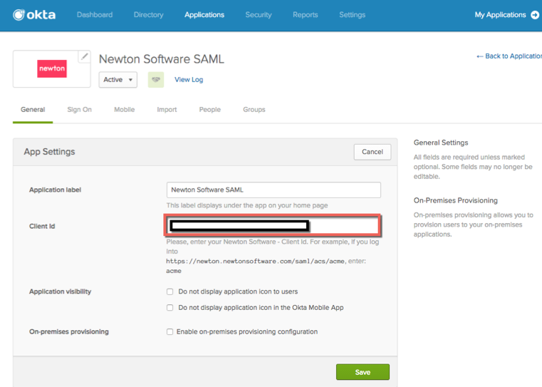
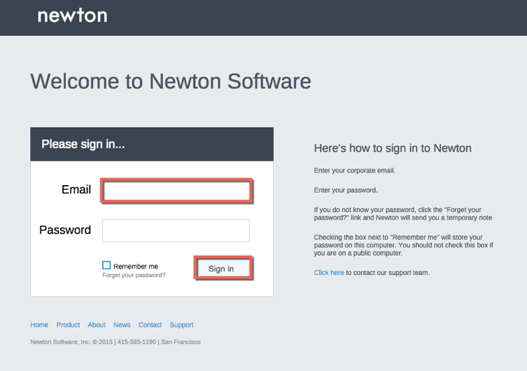

How to Configure SAML 2.0 for Newton Software
This setup might fail without parameter values that are customized for your organization. Please use the Okta Administrator Dashboard to add an application and view the values that are specific for your organization.
- Email Newton Software at Support@newtonsoftware.com and request the postback URL of your account in order to setup SAML with Okta.
The postback URL will look like this: https://newton.newtonsoftware.com/saml/acs/{clientId}
- Once you receive the postback URL, in Okta, open the General tab for the Newton Software app, and paste your Client ID (identified from the postback URL) into the corresponding field:

- Send an email to Newton Software at Support@newtonsoftware.com and request that they enable SAML. Provide the following information:
- Done!
Notes:
SP-initiated flows and IDP-initiated flows are supported.
Just in Time (JIT) provisioning is not supported.
For SP-initiated flows, go to the Newton Software login page http://newton.newtonsoftware.com/login.html and enter your Email, then click the Sign In button:
